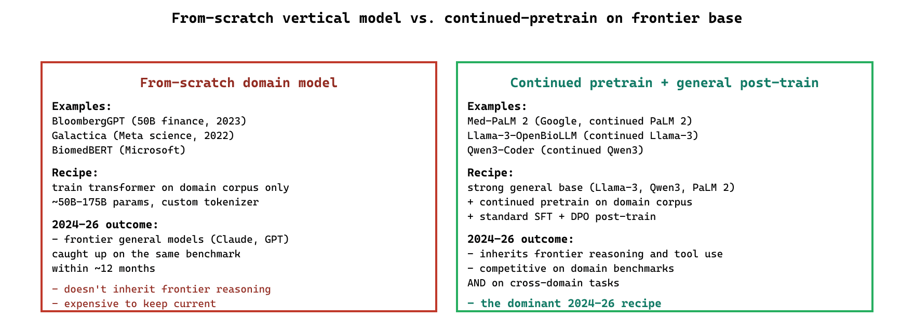

74.4.1 Domain-specific models
- Medical: Med-PaLM 2, BiomedBERT, Llama-3-OpenBioLLM, MedFound (2024). Also worth knowing: 2024 paper "Med-Gemini" (Saab et al.) as the relevant reference for "frontier general models on medicine".
- Finance: BloombergGPT, FinGPT, FinBERT, plus 2024-25 entrants like Tactic Research AI and Forefront AI's finance-specific models.
- Legal: Legal-RoBERTa, Lex-AU family.
- Cybersecurity: SecLM (Google, 2024) and the open-source security-fine-tunes from Protect AI.
- Code: Qwen3-Coder, CodeLlama, StarCoder 2.
- Robotics / industrial: Cosmos (NVIDIA, 2025): the robotics foundation model relevant to manufacturing and industrial verticals.
- Science: SciBERT, Galactica.
The pattern that consistently produces good vertical models in 2024-26 is not "train a domain model from scratch" but "continued-pretrain a strong general base on a domain corpus, then run a normal general post-training (SFT + DPO)". The first approach (BloombergGPT, Galactica) produced models that frontier general models then beat on the same benchmarks within a year; the second approach (Med-PaLM 2, the OpenBioLLM family) stays competitive longer because it inherits frontier capabilities.

74.4.2 Comparing the vertical models
| Industry | Domain model | Access | Note |
|---|---|---|---|
| Medical | Med-PaLM 2 / OpenBioLLM | API / open | Often outperformed by GPT-5/Opus on USMLE |
| Finance | FinGPT | Open | Niche; frontier models usually win |
| Legal | Legal-RoBERTa | Open (encoder) | Used for classification, not generation |
| Code | Qwen3-Coder / CodeLlama | Open | Strong on code-specific benchmarks |
| Science | SciBERT | Open (encoder) | Older; useful for citation-classification |
As of 2026, frontier general-purpose models (GPT-5, Claude Opus, Gemini 2.5) outperform domain-specific models on most domain benchmarks, including MedQA and LegalBench. The exception is workloads requiring deep proprietary data or hard privacy guarantees, where domain-tuned open models are the right answer.
What's Next?
In the next section, Section 74.5: External Reading & Communities, we build on the material covered here.